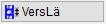
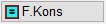
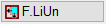
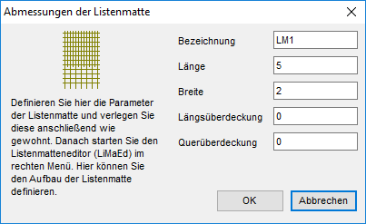
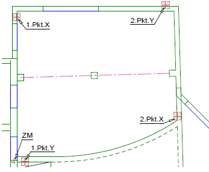
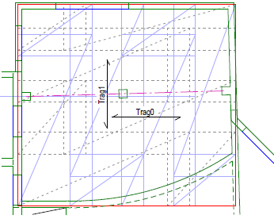
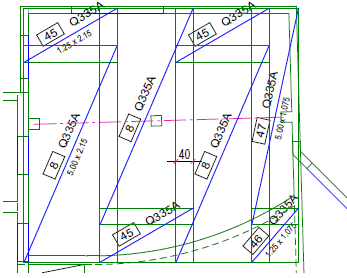
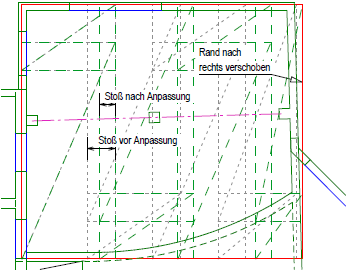

")
Alternativer Aufruf: mittlere Maustaste auf eine Diagonale, Mattentext oder ein anderes Mattenelement.
Matten desselben Mattentyps in einem vorhandenen, rechtwinkligen Bereich verlegen.
|
Achtung: Matten (eindimensionale Flächenmatten) und Formmatten (zweidimensionale Form) sind nicht kompatibel! |
|
Formmatten (zweidimensional) müssen mit den Funktionen im Formmatten-Menü [Formma] verlegt und bearbeitet werden. |

|
Tipps: |
|
·Um die Matten in einem beliebigen, rechtwinkligen Bereich zu verlegen, verwenden Sie die Funktion Freies Verlegen. » Mattengruppe frei verlegen ·Bei schrägen und kreisförmigen Schalkanten verwenden Sie die Funktion [VerPol]. » Mattenverlegung im Polygon ·Mit Rechtsklick können Sie den in der Eingabe stehenden Wert bestätigen, oder mit Linksklick einen Vorschlag aus der Auswahlliste unterhalb der jeweiligen Abfrage wählen. |

Verlegeoptionen
Vertauschung der Reihenfolge. Die ganze Matte steht am Ende. |
|
 |
Stoßversatz in Längsrichtung/Querrichtung. |
|
Auswahl der Mattenlage. |
Drehung der Matten um 90°. |
|
 |
Veränderungen des Verlegebereiches bei Anpassung der Mattenabmessungen bzw. Überdeckungen. Hinweis: Um ungewollte Änderungen des Verlegebereiches zu vermeiden, sollte F.Kons aktiviert sein. F.Kons: Keine Veränderung. F.ReOb: Anpassung des Verlegebereiches nach rechts oder oben. |
 |
Anpassung des Verlegebereiches. F.LiUn: - nach links oder unten. F.Zent: - gleichmäßig in beide Richtungen. |


1.Auflagerbreite und Verlegefaktor angeben
Die Werte für die Auflagertiefe (A) und den Verlegefaktor (N) werden auf den Schaltflächen A=... bzw. N=... (im Funktionsbereich) angezeigt.
§Um die angezeigten Werte zu ändern, klicken Sie auf die entsprechende Schaltfläche.
§Geben Sie in der Abfrage unter Auflagertiefe bzw. Wie oft herstellen (Verlegefaktor) den gewünschten Wert ein und bestätigen Sie mit der Eingabetaste.
Der angegebene Wert wird auf der jeweiligen Schaltfläche angezeigt und für alle weiteren Verlegungen verwendet. ISBCAD wechselt automatisch in den vorher verwendeten Verlegemodus [GenVer] bzw. [FreVer].
2.Verlegebereich definieren
Angabe des Verlegebereiches über zwei Diagonalpunkte.
[Winkel]
§Bestimmen Sie die Verlegerichtung, indem Sie einen Winkel eingeben oder eine der Ausrichtungsoptionen wählen. Bestätigen Sie die Eingabe eines Winkels mit der Eingabetaste.
Im Funktionsbereich stehen Ihnen Schaltflächen zur Verfügung, mit denen Sie die Matten parallel [Trag0] oder senkrecht [Trag1] zum eingegebenen Winkel verlegen können.
[1.Pkt.X]
Der Verlegebereich wird über die X- und Y-Koordinate des Anfangs- und Endpunktes beschrieben. Liegt der Anfangs- oder Endpunkt der Staffel an einer schrägen Linie, ist es ratsam, das Arbeitskoordinatensystem zu drehen. Alternativ können Sie auch die Hilfsfunktion S [Schnittpunkt] verwenden, um den Anfangs- und/oder Endpunkt an den Schnittpunkt zweier Linien zu setzen. Tippen Sie in das Eingabefeld ein s ein und klicken Sie anschließend die Bezugslinie an. Mit Rechtsklick können Sie die Auflagertiefe übernehmen. Wenn Sie bei einem Parameter (X oder Y) für den Anfangs- und/oder Endpunkt die Hilfsfunktion verwenden, achten Sie darauf, auch beim anderen Parameter die Hilfsfunktion einzugeben!
§Klicken Sie eine Bezugslinie für den Anfangspunkt an.
Falls Sie die voreingestellte Auflagertiefe übernehmen möchten, achten Sie darauf, die Linie mit dem Cursor auf der Seite anzuklicken, zu der die Auflagertiefe berücksichtigt werden soll.
Die Linienkennung wird in die Eingabe geschrieben.
§Geben Sie nach der Linienkennung den Wert für die Auflagertiefe mit dem entsprechenden Vorzeichen ein und bestätigen Sie mit der Eingabetaste.
Mit Rechtsklick können Sie die voreingestellte Auflagertiefe übernehmen. Wenn kein Abstand angegeben werden soll, geben Sie als Differenz 0 (Null) ein.
[1.Pkt.Y]
§Gehen Sie für die Angabe des Y-Wertes wie bei [XBer-Anf] beschrieben vor.
Die Zeichenmarke wird an den Anfangspunkt gesetzt.
[2.Pkt.X]; [2.Pkt.Y]
§Klicken Sie Bezugslinien für den Endpunkt wie bei [1.Pkt] beschrieben an.
3.Maße und Verlegerichtung definieren
[Mattentyp]
§Klicken Sie einen Mattentyp aus der Auswahlliste an.
Sie können den Mattentyp auch direkt eingeben. Beachten Sie dabei die korrekte Schreibweise.
Um eigene Parameter für die Listenmatte zu definieren, klicken Sie neben der Auswahlliste auf die Schaltfläche LisMat. Öffnet den Dialog Abmessungen der Listenmatte.

 Bezeichnung Geben Sie einen beliebigen Text ein. Sie dürfen keine Leerzeichen verwenden. Länge; Breite Geben Sie die äußeren Abmessungen der Listenmatte ein. Längsüberdeckung; Querüberdeckung Hier können beliebige Werte eingegeben werden. Für Lücken müssen Sie negative Werte eingeben. |
Die Verlegung wird mit diesen Parametern durchgeführt. Die Werte werden nicht in der Matten.dat gespeichert! Für den Mattenaufbau müssen Sie später den Editor für die Listenmatten LiMaEd starten.
Bevor Sie die maximale Länge und Breite der Matte definieren, können Sie zwischen folgenden Verlegearten wählen.
|
[max. Länge]; [max. Breite]
§Geben Sie die maximale Länge/Breite der Matte ein und bestätigen Sie mit der Eingabetaste.
Soll die Verlegung mit Mattenstücken erfolgen, die von den Werten der Mattenliste abweichen, können Sie die entsprechenden Werte in die Eingabe eintragen.
An dieser Stelle macht das Programm einen Verlegevorschlag. Die Richtung der Matten ergibt sich aus der Kombination von Winkel und Tragrichtung. In der Regel wird die erste Matte unten links verlegt. Daran anschließend werden, unter Berücksichtigung der Stoßüberdeckungen, weitere Matten angefügt. Es ergeben sich u. U. ungünstige Mattenabmessungen. Diese können im Anschluss durch Verändern der Parameter verbessert werden.
Die Bearbeitung der Verlegung erfolgt in drei Abschnitten. Zuerst wird die Querrichtung und dann die erste und die zweite Reihe bearbeitet. Die erste Reihe steht für alle ungeraden Reihen und die zweite für alle geraden Reihen.
Rechts neben den Eingabezeilen wird Ihnen das aktuelle Gewicht des Verlegebereiches angezeigt. Unter dem Gewicht sind die Schaltflächen Zurück/F11 und Weiter/F12 angeordnet, die zu jedem Zeitpunkt gedrückt werden können. Mit diesen Schaltflächen gelangen Sie entweder zum vorherigen Abschnitt oder zum nächsten Bearbeitungsabschnitt.

Anpassen der Parameter in Querrichtung. [Breite 1.Matte] §Geben Sie die Breite der ersten Matte ein und bestätigen Sie mit der Eingabetaste. [Resteanzahl] Das Programm berechnet die noch erforderliche Anzahl der Matten unter Berücksichtigung der eingestellten Überdeckung. Unterhalb der Eingabe erscheinen Schaltflächen mit den Werten für n+1, n+2/3, n+1/2, n+1/3, n+1/4 und n. {n = ganzzahliger Anteil der nach der ersten Matte noch erforderlichen Anzahl von Matten}. Sie können die Restanzahl vergrößern oder verkleinern. Wenn die Größe des Verlegebereiches nicht verändert werden soll, stellen Sie die Option F.Kons ein! In diesem Fall werden die Werte für die Restgröße und die Überdeckung angepasst. Im Falle einer Anpassung des Verlegebereiches wird die Restgröße angepasst, die Überdeckung beibehalten und je nach gewählter Verschieberichtung wird der Verlegebereich angepasst. §Geben Sie den entsprechenden Wert direkt ein und bestätigen Sie mit der Eingabetaste. [Restgr.] Aus der Restanzahl ergibt sich die Größe des letzten verlegten Mattenstücks. Unterhalb der Eingabe erscheinen Schaltflächen mit den Werten für ganze und halbe Mattenbreite sowie 0.000 (Null) Meter. §Geben Sie den entsprechenden Wert direkt ein und bestätigen Sie mit der Eingabetaste. Mit Linksklick können Sie einen Vorschlag aus der Auswahlliste wählen. Klicken Sie den Wert an, der für die Einteilung der Querrichtung am besten geeignet ist. [Überdeckung] Es wird der Wert aus der Mattentabelle (Matten.dat) vorgeschlagen bzw. aus den vorangegangenen Parametern berechnet. Im Falle, dass Lagermatten verwendet werden, erscheint unterhalb der Eingabe die Schaltfläche Eurocode 2. Um die erforderliche Überdeckung zu berechnen, klicken Sie die Schaltfläche an. Öffnet den Dialog Überdeckung nach Eurocode 2. Im Falle, dass Vorratsmatten verwendet werden, wird die Schaltfläche Übergreifung eingeblendet. Klicken Sie diese an, um eine PDF-Datei zu öffnen, in der die möglichen Übergreifungen im Ein‑Ebenen‑Stoß abzulesen sind.
§Geben Sie den entsprechenden Wert direkt ein und bestätigen Sie mit der Eingabetaste. Die erste Abfrage wird wieder aktiviert. [Breite 1.Matte]. §Drücken Sie die Taste F12, um zum nächsten Bearbeitungsschritt zu gelangen. |

Es folgen die Eingaben für die erste und zweite Reihe. Während der Bearbeitung kann es zu ungewünschten ÑErgebnissenì in den 2. Reihen kommen. Diese können Sie im Anschluss bearbeiten. [Länge 1.Matte] Die Länge der ersten Matte wird entweder als volle Länge oder, wenn das Feld kleiner als eine Mattenlänge ist, mit der maximal möglichen Länge vorgeschlagen. Unterhalb der Eingabe erscheint eine Auswahl für Längen. Es wird 1/1, 2/3, 1/2, 1/3, 1/4 und 0 x Mattenlänge angeboten. Soll der Verlegebereich an die Matteneinteilung angepasst werden, müssen Sie eine der Schaltflächen für den Flächenangleich benutzen. §Geben Sie die Länge ein und bestätigen Sie mit der Eingabetaste. [Restanzahl] Es wird angezeigt, wie viele Matten noch in den Verlegebereich passen. §Geben Sie die Anzahl ein und bestätigen Sie mit der Eingabetaste. [Restgr.] Es wird die Länge des letzten Mattenstücks angezeigt. §Geben Sie die Länge ein und bestätigen Sie mit der Eingabetaste. [Überdeckung] Wenn Sie bei der Querrichtung die Werte aus dem Dialog Überdeckung nach Eurocode 2 übernommen haben, wird hier die erforderliche Übergreifungslänge angeboten. §Geben Sie die Länge ein und bestätigen Sie mit der Eingabetaste. §Drücken Sie die Taste F12, um zum nächsten Bearbeitungsschritt zu gelangen. Sie können nun die zweite Reihe bearbeiten. Wenn Sie die zweite Reihe bearbeitet haben, drücken Sie F12, um die Verlegung abzuschließen. Die Matten werden entsprechend den Einstellungen in [Optionen | Systemdaten → Flächenmatten] gezeichnet. Die Nummerierung der Matten erfolgt automatisch. Dabei wird die erste Zahl nach der größten verwendeten Positionsnummer als Startwert genommen. Bei gleichen Typen mit identischen Abmessungen werden vorhandene Nummern wiederverwendet. An die jeweils erste verlegte Position wird der Mattengrößentext geschrieben. |
Beispiel:
 |
Bestätigen Sie den vorgeschlagenen Wert des Winkels mit der rechten Maustaste. Klicken Sie mit der linken Maustaste die senkrechte Wandlinie so an, als ob Sie eine Parallele nach links zeichnen wollten, und übernehmen die Auflagertiefe von 10cm durch die rechte Maustaste. Auf welcher Seite Sie die untere horizontale Linie anklicken, spielt keine Rolle, da Sie den Abstand mit +5cm individuell eingeben. Bestätigen Sie mit der Eingabetaste. Um die maximale horizontale Ausdehnung zu erzielen, klicken Sie die schräge Wand auf der Innenseite an und übernehmen mit der rechten Maustaste die Auflagertiefe. Die Begrenzung nach oben geben Sie über die Außenkante mit dem Abstand von -5cm an.
|
 |
Drehen Sie die Matten mit dem Schalter Trag1 um 90°. Drücken Sie die rechte Maustaste, bis Sie auf die Überdeckung kommen. Aktivieren Sie die Ermittlung der Übergreifungslänge nach Eurocode 2 durch Klick auf den Schalter. Nach dem Drücken auf OK werden die Matten neu gezeichnet und die Zahlen in den Eingaben entsprechend angepasst. Benutzen Sie wieder die rechte Maustaste, um auf die Eingabe für die Restanzahl zu kommen. Ändern Sie den Wert auf 2.5 Stück durch Anklicken der zugehörigen Schaltfläche. Die Restbreite und die Überdeckung werden nochmals angeglichen. Zum Abschluss der Eingaben für die Querrichtung drücken Sie auf den Knopf mit Weiter/F12.
Drücken Sie die rechte Maustaste, bis Sie zur Restgröße gelangen, und ändern den Wert auf 1.25. Mit der Weiter/F12-Taste wird die Eingabe für die 1. Reihe beendet.
|
 |
Fangen Sie die zweite Reihe mit einer Viertelmatte an. Die Anzahl der noch zu verlegenden Matten stellen Sie auf 1.000.
|
Variante für die Quereinteilung: |
|
 |
Nach dem Drehen der Tragrichtung um 90° klicken Sie auf den Schalter für die Bereichsanpassung nach rechts F.ReOb. Drücken Sie die rechte Maustaste, bis Sie auf die Überdeckung kommen. Tragen Sie hier den Wert 0.35m ein. Der Verlegebereich wird nach rechts verschoben. Stellen Sie die Fläche wieder auf F.Kons. Drücken Sie die rechte Maustaste, bis Sie auf die Restanzahl kommen, und klicken hier auf den Vorschlag für 2.5 Stück. Der rechte Rand hat seine endgültige Lage eingenommen. Klicken Sie auf den Schalter für konstanten Verlegebereich. Bearbeiten Sie die erste und zweite Reihe wie beschrieben. |
Siehe auch:
Zugehörige Referenzen: